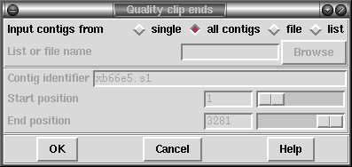

This function performs a similar analysis to Quality Clipping, but only trimming the ends of contigs. This can be useful as Phrap automatically clips where sequences disagree, but the ends of contigs will not be trimmed in such a manner. By trimming such poor quality from the end Find Internal Joins may find some problematic matches.